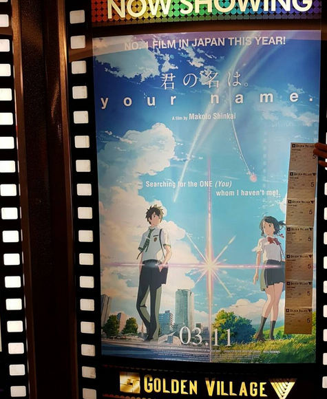

I was delighted to perform with Singapore Polytechnic Symphonic Band in the Esplanade Concert Hall.
Photo: Singapore Polytechnic Sympphonic Band
The concert was a success, we played really well and I am grateful that I am still performing with Euphonium after
so many years since 2007. Can't wait for my next performance on this coming 3rd April with Ang Mo Kio Secondary
School Alumni Band!
Sandwich March Progress Update
5 January 2017
Composing Sandwich March is progressing well. I a have finished all the way until the Trio.
The theme for the Trio is also decided, I have now have to shape the accompaniment to fit in the melody. I really
hope I can learn more music theory and this will be much easier for me to figure out the secrets unlocking good
shaping of melody and harmony.
Going Anime Festival Asia
27 November 2016
What a busy great sunday. I have to submit WCD assignment today and I was invited to go for AFA! I decided to go
because of the Sound Euphonium Event which it made an anime about my instrument euphonium!
After Watching "Your Name"
13 November 2016
Kimi no Na wa,(Your Name) is a top Japanese animated film this year. It was aired in Singapore begining of November.
I watched it with 6 of my old friends, the hype was really real! It was so beautiful that I feel it has surpassed
Spirited Away in my opinion to become the best animated film of all time. The execution of it is so perfect that
I will not want to see any better films in the next decade. Here is what my friend said:
"君の名は。 「Your Name」 まだ会ったことのない君を、探している 「I am searching for you, whom I have never met yet.」 Another great movie by
Makoto Shinkai who is here to break our hearts. Er I meant touch!! Is known for his attention to detail and poetic
films. From mountain sceneries to comet sightings (seriously all scenes are hand drawn. No shit!) And the 1:1 exact
recreation of Tokyo. Hell even a (Miko mai) dance scene required a choreographer hired specially Not to mention
that the music was well thought out to apposite the emotions invoked. Hence, the feels!!! It may not seem much
but it is a movie recommend:) And special thanks to my 6 other company with cy holding the tickets!"

It is really a great film, I recommend everyone to watch it! and take note, no spoiler before watching, you likely
wont feel the way I did if you knew some spoilers. I watched it without even knowing what genre it is beforehand.